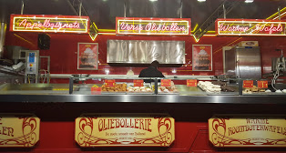

Oliebollenkraam
Firma Stuy
Hornbach Amsterdam
https://goo.gl/maps/ZDk8P4e8HUt
Oliebollenkraam
Raadhuisplein Oosterbeek
https://goo.gl/maps/XbfBKaqPexP2
Oliebollerie®
Fam: Lubbers
Maxis Muiden

https://goo.gl/maps/d69m6Q7psGU2
Oliebollerie®
Fam: Lubbers
Schiphol AankomstHal
Plein
Den Haag
https://goo.gl/maps/ntLEenboQ3A2
Kerkplein
Hoorn
https://goo.gl/maps/ewwwoF3ADvR2